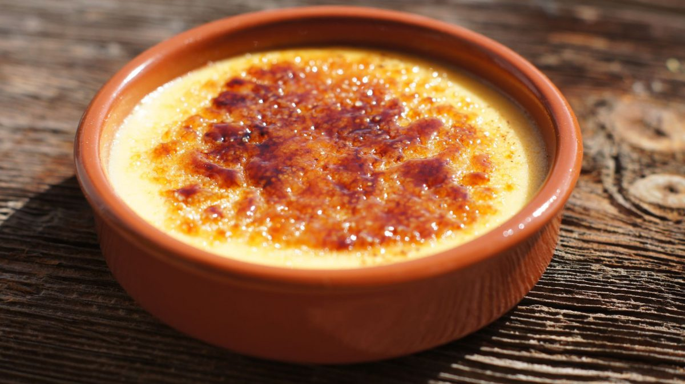

Crema Catalana

És una joia de la cuina conventual i domèstica que ha sobreviscut al pas dels segles, convertint-se en el ritual dolç per excel·lència de l’es taules familiars. Amb una base de llet infusionada amb el perfum de la canyella i la llimona, aquesta recepta culmina en el gest gairebé cerimonial de trencar la fina capa de sucre cremat, un contrast cruixent que amaga un cor suau i temperat que és pur llegat mediterrani.